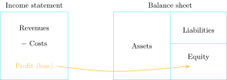

Definition
The bilancio is a representation of the firm's financial position (situazione patrimoniale e finanziaria) and of its economic result at the end of the administrative period (usually one year). It must be clear (understandable), true (accurate, verifiable, based on documented data) and correct (compliant with accounting rules).
- Asset position: what the firm owns at that date — tangible (buildings, equipment, cash) and intangible (brands, patents).
- Financial position: how the firm financed its activities — money borrowed from third parties and money invested by the owners.
- Economic result: profit if revenues exceed expenses, loss otherwise; key to long-run profitability and sustainability.
- Period: comparing periods reveals trends, strengths and weaknesses.
Model
Stakeholders
| Internal | External |
|---|---|
| majority/minority owners | customers, suppliers |
| managers | tax authority |
| employees | lenders |
Uses: managers plan growth and choose investments; employees check career prospects and stability ("will they pay my salary?"); a customer's IT manager choosing a cloud provider checks it can guarantee service continuity.
Drafting principles
| Principle | Rule |
|---|---|
| Prudence | record only certain revenues, but both certain and |
| probable costs | |
| Accrual | attribute costs and revenues to the period they belong |
| (competenza) | to, not to the period of payment or collection |
| Consistency | valuation criteria cannot change from one year to the |
| next (changes must be explained) |
The three basic documents
| Document | Answers |
|---|---|
| Balance sheet (stato patrimoniale) | how capital is invested and where money comes |
| from — a stock at a date | |
| Income statement (conto economico) | revenues and costs of the period → profit or |
| loss — a flow | |
| Notes (nota integrativa) | accounting policies, explanations, other |
| relevant information |
Link: the profit or loss of the income statement, if not distributed, flows into equity in the balance sheet. A cash-flow statement (operating, investing, financing flows) answers yet another question: why did cash change? Notes example: "the company applies IAS/IFRS"; "financial assets at amortized cost, except instruments traded on active markets, at fair value"; "financial debts are current if repayable within 12 months"; "no significant events after the reporting date".
Example
Delivering goods on credit creates revenue and a receivable before cash arrives. A bank loan brings cash and a liability, not revenue. Buying a machine swaps cash for an asset; its use becomes cost over time through depreciation.
Pitfall
Profit, revenue and cash receipts are different. Prudence is asymmetric (certain revenues, probable costs) but is not deliberate under-statement.
Recall
Define the bilancio and its three qualities; list the three principles; explain the profit → equity link; say which statement answers "what do we owe?" and which "what did we earn?".
Picture

Retained profit is the bridge between the two statements.